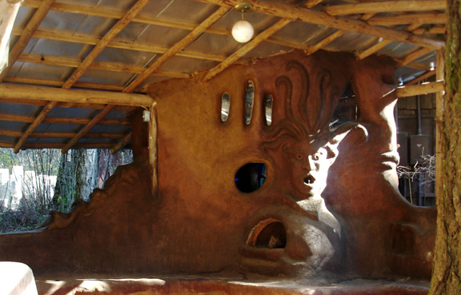
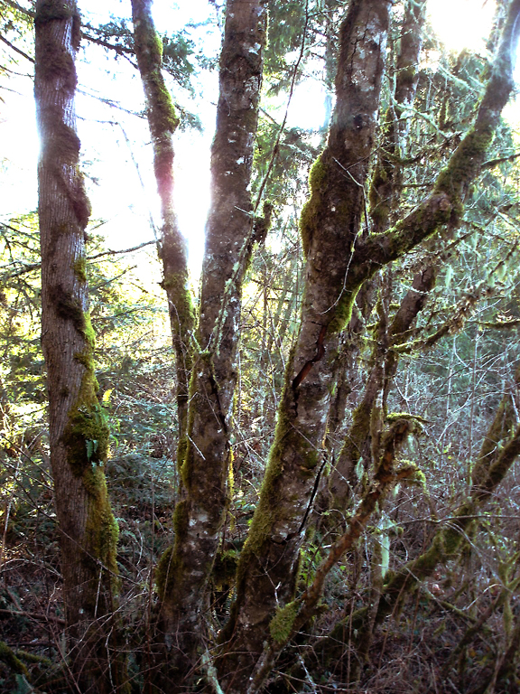
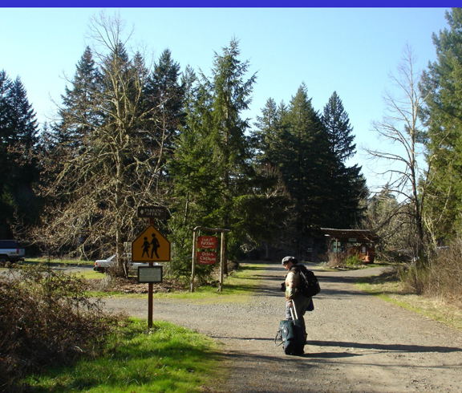

back in the U.S.!!!
March 2nd, 2006 by BenjaminWe have been camping near Vancouver, Canada for about a week with no cell phone service. Expect to see pictures and posts very soon. Right now we are tired and going to bed! 
We have been camping near Vancouver, Canada for about a week with no cell phone service. Expect to see pictures and posts very soon. Right now we are tired and going to bed! 
Pictures of various permaculture projects around Lost Valley - papercrete, strawbale, cob, a solar cooker and solar shower, and more.

A cob construction - resides behind the main lodge. There is a phone booth on the right-hand side behind the bench.
Here are some pics of Lost Valley’s land, including their creek and meadow.

Entering Lost Valley

Coming up the driveway at Lost Valley. Parking lot is on the left, offices are beyond the parking lot. The front cob bench is straight ahead.
I would like to welcome my old roommate and friend, Miguel (Chandengui), to the NomadicScribe blog. He has graciously offered to serve as our photo editor, showing off his photo-manipulation skills to make our pictures more professional.
I see Lost Valley as a three-fold enterprise: a conference-hosting business, a land-development operation, and a housing co-op. All three projects are hosted on the same land and run by the same people, who live together 24 hours a day. Running this enterprise is by no means a small feat.
Read the rest of this entry »
We got the car all fixed up in Mountain Home, Idaho (thanks to Art with Valley Towing, and C & A Automotive). It was the timing belt. Got it and a leaky water pump replaced for $340, and they threw in a free oil change. We’re staying in Portland with April’s friend Maggie. We’ll be at Lost Valley tomorrow night!
Finally got a chance to upload some pics from the past few days.
Apparently up here in the north, there is a thing called “snow” and when it falls, it collects on the ground, and stays for the entire duration of cold weather. This “snow” as it is called can be quite a hindrance as it covers everything, and must be forcibly moved to get it out of the way. Being from Texas, this is an entirely alien concept to both April and myself. So, long story short - the camp site that we were going to stay at tonight was snowed in (four feet), as are every camp site in the area. After learning this news, we re-prioritized our goals and decided to drive to Boise, Idaho tonight and then into Portland tomorrow, where we can stay with April’s friend Maggie until Wednesday.
On the way from Twin Falls, ID to Boise, our “check engine” light came on. I stopped the car like a good driver and checked everything under the hood - all the hoses looked fine and the fluid levels were all fine, apart from the oil which was a little low. We were due for an oil change anyway, so I added a quart of oil and continued on the way, planning to stop at a Jiffy Lube in the morning to get it taken care of. About an hour outside of Twin Falls (9:30pm), the car starts decelerating and slowly comes to a stop. We still have battery power but when trying to start the car, it revs but does not turn over. We called upon the graces of the good god AAA (pronounced “triple-A” not “ah”), and were rescued from our roadside fate after about an hour by Art the towtruck guy. So our car is now in the parking lot of the most reputable garage in town and we are yet again staying at a motel. Hopefully we can get the car fixed (again!) tomorrow and be in Portland before bedtime.
We’re running about a half day ahead of schedule thanks to Karen Jean’s hotel donation Thursday night and our failure to reserve camping in Bryce Canyon tonight. We are able to drive till we crash when all we have to do is check in and brush our teeth. We’re in Salt Lake City, Utah at a Motel 6, and finally able to update on our last 3 days in the southwest.
Let’s go backwards. Utah held the first snow capped mountains Benjamin had ever seen. As we approached it, I told him how it looked like the little mountain across the street from my house in Oro Valley and his eyes got big. “That’s a little mountain!?” I wish we had the time for a detour to the Rocky Mountains of Colorado to show what a real mountain pressence feels like.
Arizona did me proud. We camped at the Grand Canyon National Park Friday night and spent the first part of Saturday with our jaws dragging on the ground. I forgot how breathtaking it was. We drove through the painted desert and part of Glen Canyon on the way out of Arizona. There was scarcely a souvenir stand for nearly the whole drive to Utah. It was so moving and poetic to have the greys, the pinks, the golds, the blues, and the REDS (especially the reds) all to myself. Just the land expressing itself and its savoring witness moving along its body like the sunlight.
New Mexico flew by in a flurry of “trying to catch up” since we left so late Thursday. I may change my mind about it later when we go through it again, but right now New Mexico just feels like an appetizer for the beauty-buffet that lies in Arizona.